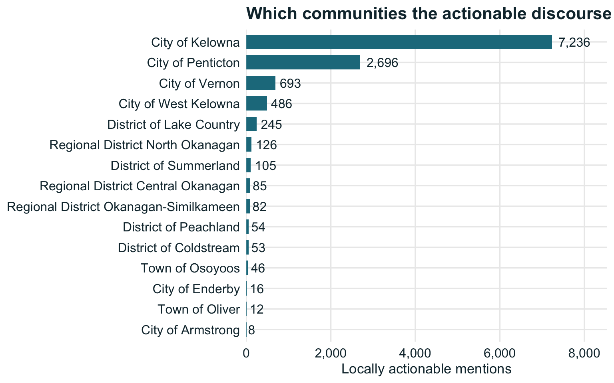
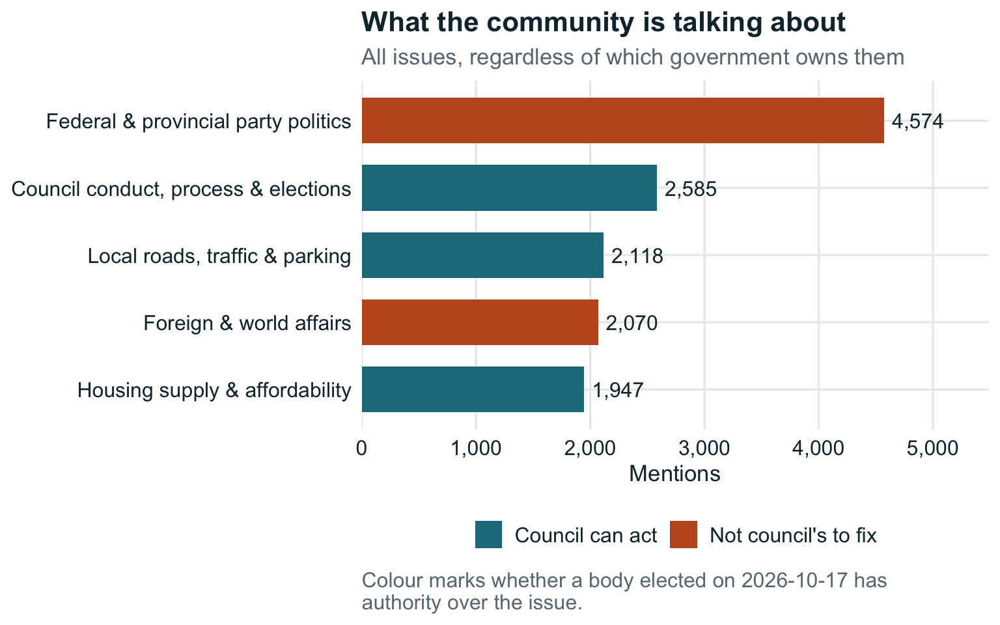
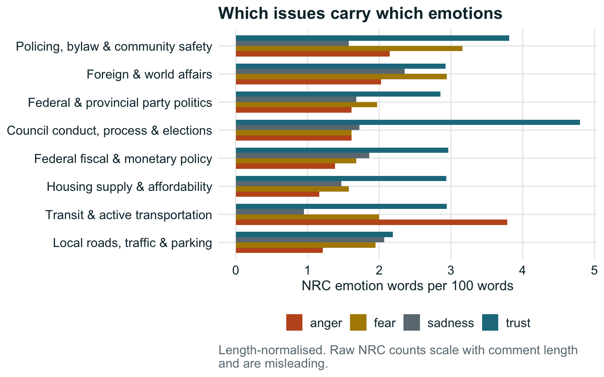
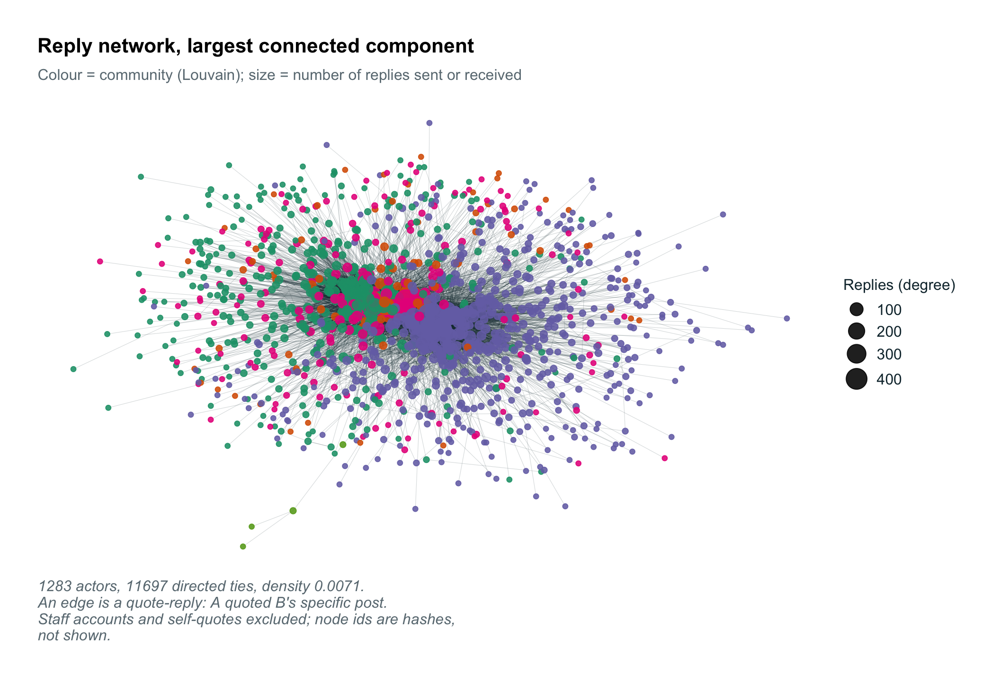
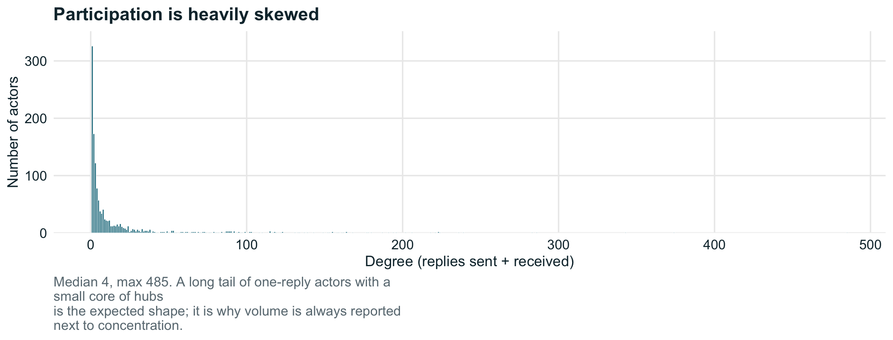
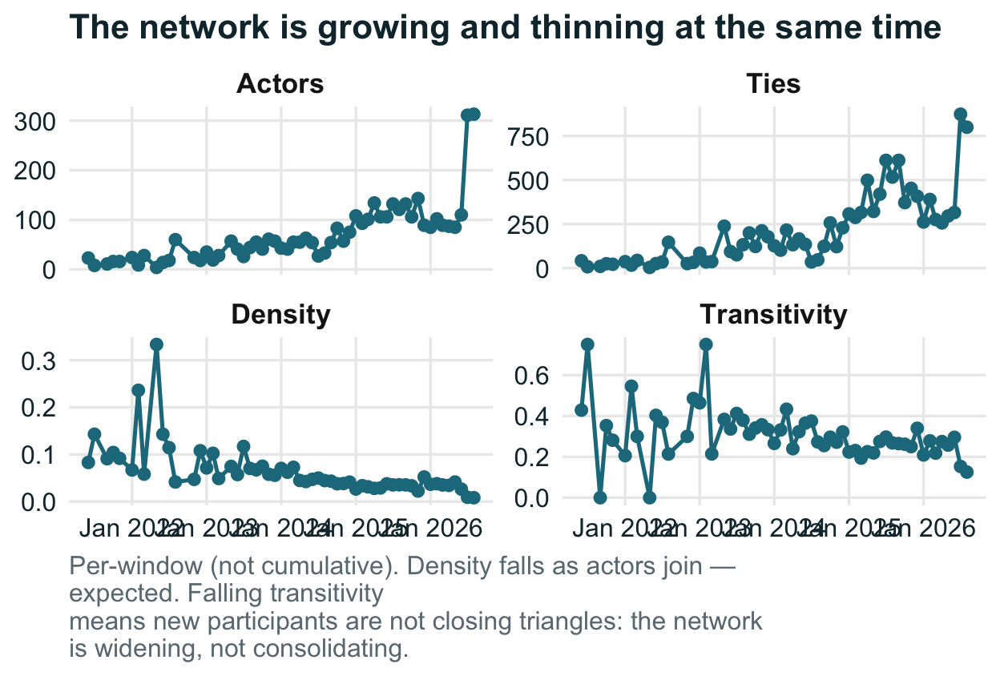
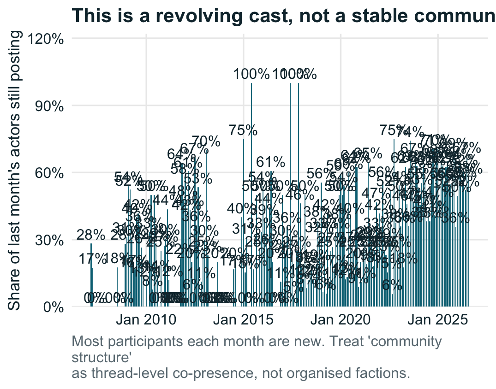
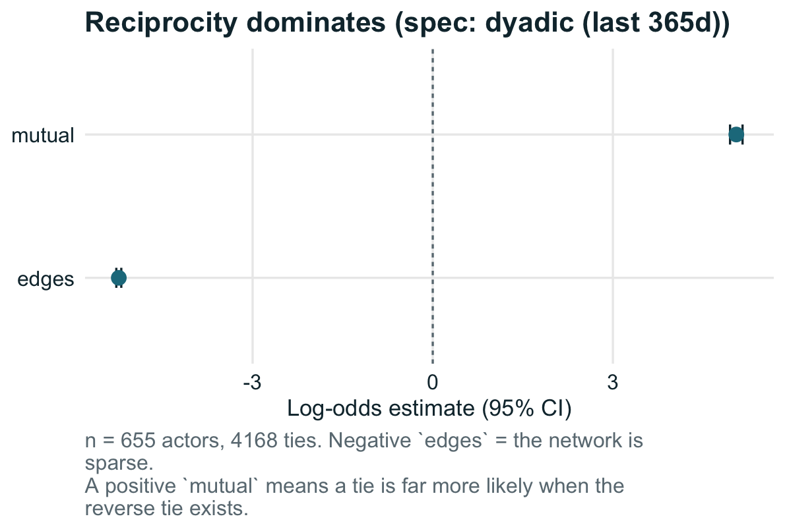
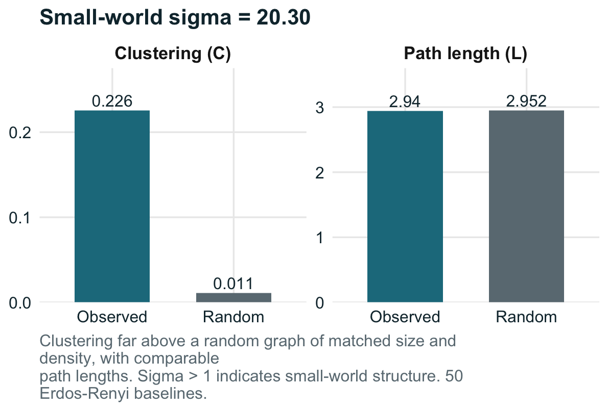

Days to voting day
30
Election phase
pre-campaign period
Comments analysed
75,374
Locally actionable
31%


| Issue | Scope | Mentions | Posts | Mean salience | Mean confidence |
|---|---|---|---|---|---|
| Federal & provincial party politics | federal | 4574 | 4571 | 0.69 | 0.65 |
| Council conduct, process & elections | local | 2585 | 2500 | 0.54 | 0.59 |
| Local roads, traffic & parking | local | 2118 | 2116 | 0.52 | 0.54 |
| Foreign & world affairs | federal | 2070 | 2066 | 0.73 | 0.70 |
| Housing supply & affordability | shared | 1947 | 1919 | 0.60 | 0.61 |
| Transit & active transportation | local | 1676 | 1671 | 0.69 | 0.69 |
| Policing, bylaw & community safety | shared | 1614 | 1611 | 0.51 | 0.52 |
| Federal fiscal & monetary policy | federal | 1423 | 1414 | 0.58 | 0.56 |
| Property tax & municipal budget | local | 1191 | 1170 | 0.55 | 0.63 |
| Fire & emergency management | local | 1103 | 1070 | 0.59 | 0.56 |
| Zoning & land use | local | 1046 | 1016 | 0.71 | 0.72 |
| Courts, bail & sentencing | provincial | 1014 | 1010 | 0.65 | 0.63 |
| Health care | provincial | 1008 | 1008 | 0.62 | 0.65 |
| Drug policy & treatment | provincial | 933 | 929 | 0.55 | 0.62 |
| Development & building approvals | local | 870 | 853 | 0.58 | 0.62 |
| Parks, recreation & beaches | local | 822 | 813 | 0.58 | 0.61 |
| Homelessness & social services | shared | 787 | 785 | 0.64 | 0.67 |
| ICBC, BC Hydro & Crown corporations | provincial | 768 | 766 | 0.61 | 0.59 |
| Immigration | federal | 733 | 733 | 0.64 | 0.70 |
| Provincial highways | provincial | 699 | 694 | 0.60 | 0.59 |
| Economic development & business | local | 674 | 671 | 0.45 | 0.48 |
| Water & sewer utilities | local | 592 | 564 | 0.71 | 0.69 |
| Agriculture & ALR | shared | 482 | 473 | 0.50 | 0.53 |
| Federal & provincial party politics | provincial | 367 | 367 | 0.73 | 0.64 |
| Flood, drought & climate resilience | local | 331 | 330 | 0.44 | 0.47 |
| Education funding & curriculum | provincial | 321 | 321 | 0.58 | 0.56 |
| Garbage, recycling & landfill | local | 221 | 187 | 0.69 | 0.69 |
| Agriculture & ALR | federal | 198 | 198 | 0.61 | 0.40 |
| Short-term rentals | shared | 181 | 180 | 0.71 | 0.75 |
| Property tax & municipal budget | provincial | 154 | 154 | 0.60 | 0.53 |
| Fire & emergency management | provincial | 129 | 129 | 0.69 | 0.55 |
| Economic development & business | provincial | 128 | 128 | 0.52 | 0.44 |
| Policing, bylaw & community safety | local | 112 | 112 | 0.63 | 0.56 |
| Housing supply & affordability | provincial | 110 | 110 | 0.70 | 0.64 |
| Regional district services | ballot | 99 | 98 | 0.46 | 0.56 |
| Council conduct, process & elections | provincial | 97 | 97 | 0.54 | 0.43 |
| Local roads, traffic & parking | provincial | 97 | 96 | 0.61 | 0.45 |
| School board & trustees | ballot | 77 | 76 | 0.43 | 0.45 |
| Flood, drought & climate resilience | provincial | 63 | 63 | 0.59 | 0.46 |
| Agriculture & ALR | provincial | 44 | 44 | 0.54 | 0.39 |
| Housing supply & affordability | federal | 36 | 36 | 0.72 | 0.63 |
| Policing, bylaw & community safety | provincial | 35 | 35 | 0.54 | 0.43 |
| Flood, drought & climate resilience | federal | 21 | 21 | 0.58 | 0.47 |
| Economic development & business | federal | 21 | 21 | 0.48 | 0.41 |
| Federal fiscal & monetary policy | provincial | 21 | 21 | 0.59 | 0.44 |
| Council conduct, process & elections | federal | 21 | 21 | 0.69 | 0.49 |
| Transit & active transportation | provincial | 19 | 19 | 0.69 | 0.48 |
| Fire & emergency management | federal | 17 | 17 | 0.65 | 0.53 |
| Zoning & land use | provincial | 15 | 15 | 0.49 | 0.44 |
| Policing, bylaw & community safety | federal | 15 | 15 | 0.59 | 0.44 |
| Homelessness & social services | provincial | 12 | 12 | 0.51 | 0.48 |
| ICBC, BC Hydro & Crown corporations | federal | 11 | 11 | 0.47 | 0.39 |
| Transit & active transportation | shared | 11 | 11 | 0.86 | 0.62 |
| Drug policy & treatment | federal | 10 | 10 | 0.72 | 0.51 |
| Courts, bail & sentencing | federal | 9 | 9 | 0.68 | 0.52 |
| Health care | federal | 9 | 9 | 0.71 | 0.49 |
| Parks, recreation & beaches | provincial | 7 | 7 | 0.56 | 0.50 |
| Local roads, traffic & parking | shared | 7 | 7 | 0.53 | 0.44 |
| Fire & emergency management | shared | 6 | 6 | 0.67 | 0.50 |
| Property tax & municipal budget | shared | 5 | 5 | 0.50 | 0.52 |
| Water & sewer utilities | shared | 5 | 5 | 0.66 | 0.63 |
| Development & building approvals | provincial | 3 | 3 | 0.57 | 0.42 |
| Provincial highways | federal | 3 | 3 | 0.80 | 0.38 |
| Zoning & land use | ballot | 2 | 2 | 0.75 | 0.60 |
| Transit & active transportation | federal | 2 | 2 | 0.65 | 0.40 |
| Water & sewer utilities | provincial | 2 | 2 | 0.60 | 0.50 |
| Development & building approvals | shared | 1 | 1 | 0.90 | 0.60 |
| Education funding & curriculum | federal | 1 | 1 | 0.60 | 0.50 |
| Fire & emergency management | none | 1 | 1 | 0.30 | 0.30 |
| Foreign & world affairs | none | 1 | 1 | 0.50 | 0.30 |
| Council conduct, process & elections | ballot | 1 | 1 | 0.80 | 0.75 |
| Council conduct, process & elections | shared | 1 | 1 | 0.50 | 0.50 |
| Zoning & land use | federal | 1 | 1 | 0.60 | 0.40 |
| Zoning & land use | shared | 1 | 1 | 0.60 | 0.60 |
| Local roads, traffic & parking | federal | 1 | 1 | 0.80 | 0.45 |
| Property tax & municipal budget | federal | 1 | 1 | 0.40 | 0.50 |

Comments on Castanet’s public phpBB forums are coded against a codebook of BC local-government competencies drawn from the Community Charter and Local Government Act. The central judgement is scope: whether an issue is one a municipal council or regional board can act on, or a provincial/federal matter being directed at city hall.
ballot is deliberately separate from local — school trustees and regional district electoral area directors are not municipal, but their seats are on the same 2026-10-17 ballot.
A keyword sieve decides which comments are worth a model call. The sieve is a recall filter, not a finding — every figure on this dashboard excludes sieve rows and uses model codes only.
The gate requires at least one locally-actionable candidate code. Comments whose only matches are federal or provincial (foreign affairs, party politics, courts, provincial highways) are not sent to the model, which cut eligible comments by 28% on the pilot corpus.
Bulk coding runs on a small model; a stratified sample is re-coded by a larger one to measure agreement. The audit sample deliberately includes comments the gate skipped, so the false-negative rate is estimated rather than assumed.
| run_at | mode | threads_seen | posts_new | errors |
|---|---|---|---|---|
| 2026-09-17 13:59:33 | daily | 97 | 2008 | 0 |
| 2026-09-16 15:19:09 | daily | 123 | 1140 | 0 |
| 2026-09-15 16:12:23 | daily | 105 | 820 | 0 |
| 2026-09-14 15:38:41 | daily | 60 | 588 | 0 |
| 2026-09-13 18:15:49 | daily | 64 | 937 | 0 |
- Post-moderation. The captured corpus is what survived moderation; removed comments and closed comment sections are invisible here.
- Not a survey. Forum commenters are not a representative sample of residents. Volume is a measure of discourse, not of public opinion.
- Concentration matters. Volume is reported next to a Herfindahl index on posts-per-actor, because a handful of prolific posters can manufacture the appearance of a groundswell.
- No comment text or handles appear here or in the underlying file this page reads.
Built 2026-09-17 06:59 PDT · Limnology Research · Okanagan Civic Pulse

| Issue | Scope | Owner | Mentions | Share of top 5 |
|---|---|---|---|---|
| Federal & provincial party politics | federal | Provincial / federal | 4574 | 34% |
| Council conduct, process & elections | local | Elected 2026-10-17 | 2585 | 19% |
| Local roads, traffic & parking | local | Elected 2026-10-17 | 2118 | 16% |
| Foreign & world affairs | federal | Provincial / federal | 2070 | 16% |
| Housing supply & affordability | shared | Elected 2026-10-17 | 1947 | 15% |
Scope distinguishes local (direct municipal authority), ballot (school trustees and regional district electoral area directors — not municipal, but on the same ballot), and shared (a real local role, province holds the main levers). Filter boxes above each column are live; the CSV button exports what you have filtered to.


| Source | Platform | Access | Days | Posts | Coded | In-scope/day | % in scope | Concentration | Novel issues |
|---|---|---|---|---|---|---|---|---|---|
| kelowna_escribe | escribe | open | 110 | 2644 | 2067 | 18.76 | 100% | 0.94 | 1 |
| castanet_forums | phpbb | open | 2724 | 40184 | 17993 | 3.17 | 48% | 0.39 | 21 |
| Source | Name | Platform | Access | Cost | Reply edges | Active |
|---|---|---|---|---|---|---|
| westkelowna_ourwk | Engage West Kelowna | engagementhq | open | free | no | no |
| castanet_forums | Castanet News Comments + discussion forums | phpbb | open | free | yes | yes |
| reddit_okanagan | r/okanagan | blocked_by_policy | same as reddit_kelowna - parked | yes | no | |
| kelowna_getinvolved | Get Involved Kelowna (public engagement) | socialpinpoint | open | free - but comments are JS-loaded; needs XHR endpoint mapping | no | yes |
| castanet_kamloops | Castanet Kamloops (= forums.castanet.net f=125) | phpbb | open | free - already reachable via the existing crawler, just activate f=125 | yes | no |
| reddit_kelowna | r/kelowna | blocked_by_policy | free tier exists but is NOT an available path: research must go via Reddit for Researchers (RFR) | yes | no | |
| kelowna_escribe | City of Kelowna council agendas, minutes, correspondence | escribe | open | free | no | yes |
Sources are not interchangeable. Only platforms with stable pseudonymous IDs and resolvable reply structure (Reply edges = yes) can support network analysis at all; the rest contribute volume, issue mix and sentiment only. In-scope/day — locally actionable comments per active day — is the honest headline, because it rewards a source for producing material a council can act on rather than for sheer volume. Access postures were verified on the dates recorded in the registry and should be re-checked before any new crawl.


| Measure | Reply (directed) | Co-participation (>=2 threads) |
|---|---|---|
| Actors | 1301.0000 | 1322.0000 |
| Ties | 11707.0000 | 47196.0000 |
| Density | 0.0069 | 0.0541 |
| Components | 10.0000 | 2.0000 |
| Transitivity | 0.2260 | 0.4150 |
| Mean distance | 3.3500 | 4.9900 |
| Measure | Value |
|---|---|
| Clustering C (observed) | 0.226 |
| Clustering C (random) | 0.011 |
| Path length L (observed) | 3.350 |
| Path length L (random) | 2.950 |
| Small-world sigma | 17.820 |
Sigma above 1 indicates small-world structure — clustering far above a random graph of the same size and density, with comparable path lengths. Compared against 50 Erdős–Rényi graphs, averaged over reachable pairs because random graphs at this density are frequently disconnected.
Read both networks together. Quote-replies are the only unambiguous reply signal in a flat phpBB thread, so the reply graph is sparse by construction and understates real interaction. Co-participation is denser but weaker evidence: two people in the same thread may never have addressed each other. A finding that holds in only one of the two should say so.
A caution on communities. Louvain optimises modularity and always returns a partition — even for a random graph — and its resolution limit hides small groups. On this corpus the split is substantially by thread, not by stable faction. A statistically validated backbone of the co-participation graph (disparity filter, α = 0.05) reduced 3,723 raw ties to 15: nearly all apparent co-participation is explained by how active each actor is, not by genuine affinity. Treat community structure as descriptive, not as evidence of organised blocs.
ERGM is fitted weekly and is currently suppressed. MCMC did not mix on this graph, and fit_ergm() reports the failure rather than printing coefficients from a degenerate model. At 231 ties that is the expected outcome, not a bug — it needs a larger corpus before the model is identifiable.




1. 59% of Okanagan resident comments raising an issue raise one a council can act on strong
10101 of 17059 issue-bearing comments by an identifiable person in the Okanagan forums carry at least one local, ballot or shared code. For contrast the out-of-region forums (B.C., Kamloops) run at 16% over 4107 comments. Council agenda items are excluded — they are in-scope by definition and would inflate this to near 100%.
So what: Use this as the denominator when judging whether a spike is worth a council’s attention. The remainder is real public feeling, but no local lever exists for it.
Confidence — A direct count over resident-authored posts. Quoted for the Okanagan forums only: this percentage is a property of which forums are collected, not of the community, so pooling in out-of-region forums would move it without anyone changing what they say.2. Residents and council are focused on different things: Transit & active transportation takes 12% of resident attention but 2% of the agenda provisional
Share of locally-actionable mentions within each corpus, 13 Jan 2025 to 17 Sep 2026. Transit & active transportation: 11.6% of resident comments (n=1502) vs 1.8% of agenda items (n=48). Also Policing, bylaw & community safety (10.4% vs 1.3%) and Fire & emergency management (8.0% vs 0.6%). Conversely Zoning & land use is 22.2% of the agenda against 3.0% of comments.
So what: For a council: these are the issues you are being judged on but not visibly working on. For a candidate: the gap is the campaign opening.
Confidence — Shares, not counts, and clipped to the window both sources cover — the corpora differ ~4x in size, so raw counts would measure collection effort rather than attention. Matters reaching council via staff reports rather than numbered agenda items are still not captured.3. The angriest and most fearful discourse is about things a council cannot fix strong
Per 100 words: anger 1.65 vs 1.20, fear 2.15 vs 1.58, trust 2.76 vs 2.53 (out-of-scope vs locally actionable). Comment length is near-identical across the two bands (136 vs 137 words), so length cannot explain the difference either way.
So what: Expect hostility at the podium about provincial and federal matters. Naming the jurisdiction explicitly, early, is the only available response. Trust vocabulary is level across the two bands, so there is no trust gap to appeal to here.
Confidence — Resident-authored posts only, normalised per 100 words. Pooling council agendas into the locally-actionable band reversed the sign of this comparison, and raw NRC counts reversed it again.4. Local roads, traffic & parking is the largest locally-actionable issue for residents strong
2044 mentions by identifiable people; next are Council conduct, process & elections (1777) and Housing supply & affordability (1699).
So what: Treat as the standing agenda item for public communication.
Confidence — Simple volume count over model-coded, resident-authored posts.5. No locally-actionable issue is being driven by a handful of voices strong
Highest concentration is Transit & active transportation: 1623 comments from 166 actors, HHI 0.12 (1.0 = one person, 0.01 = perfectly even).
So what: Volume figures here can be read as breadth of concern rather than the product of a few prolific posters.
Confidence — Herfindahl index over posts per actor, computed across the window rather than averaged per day.6. kelowna_escribe yields more actionable material per day than castanet_forums strong
18.8 vs 3.2 locally-actionable items per active day.
So what: Weight collection effort toward the higher-yield source. Council records are in-scope by construction; forum comment needs filtering.
Confidence — Direct count per active day, which rewards in-scope output rather than raw volume.7. Actionable resident discourse is concentrated in kelowna provisional
5643 mentions vs 2696 for the next community. 5466 of 15809 actionable comments name no community at all.
So what: Geographic targeting is possible but incomplete: most comments never name a community, so jurisdiction counts are a lower bound.
Confidence — Jurisdiction is only assigned when a place name appears; absence is not evidence of absence.8. Debate runs through a small core of connectors provisional
1301 actors, 11707 ties. The most active 10% account for 64% of all replies. Clustering 0.23 against 0.01 expected at random.
So what: A handful of accounts shape how arguments spread. Engagement reaching them travels further than the same effort spread evenly.
Confidence — Quote-replies are the only reply signal available, so the network is sparse by construction and understates real interaction.9. This is a pilot: read every number above as provisional weak
72,203 resident posts and 2,647 council agenda items over 18 Feb 2007 to 22 Sep 2026. Classifier agreement against a human standard has not yet been measured. Forum commenters are not a representative sample of residents.
So what: Do not cite any single figure here as established. The measures worth acting on are the large, direction-consistent ones — the scope split and the emotion gap — not small differences between issues.
Confidence — Stated deliberately: a dashboard that never reports its own limits invites over-reading.Corpus. Public comments from Castanet’s phpBB forums (nine forums, Okanagan and BC) and agenda items plus public-hearing testimony from City of Kelowna council records via eScribe. Every row records its source_id, so any figure can be decomposed by source.
Coding. Each comment is coded against codebook/codebook.yml — a content-hashed, versioned codebook of BC local-government competencies drawn from the Community Charter and Local Government Act. The central variable is scope: which order of government owns the issue. ballot is separate from local because school trustees and regional district electoral area directors are not municipal but appear on the same 2026-10-17 ballot. Every coded row stores the codebook version that produced it, so revising a definition never silently rewrites already-coded history.
Classifier. claude-opus-5, with structured outputs and a versioned prompt. A keyword sieve runs first but is a recall filter, not a finding — every figure here excludes sieve rows. An earlier cheaper tier was rejected on measurement: it scored kappa 0.39 against Opus 5 on the scope judgement and systematically under-called “local”. Where multiple coders exist for a post, strict precedence applies (human > Opus 5 > Sonnet 5 > Haiku) so figures never average classifiers of different quality.
Sentiment. sentimentr polarity plus NRC emotion, normalised per 100 words. Raw NRC counts scale with comment length and produced a reversed result before normalisation. Lexicon polarity failed to separate model-coded stance (+0.03 oppose vs +0.09 support) and is therefore not reported as a finding.
Networks. Two, deliberately. The reply network is directed and built from blockquote citations, which resolve both the quoted user and the exact quoted post — unambiguous but sparse. The co-participation network is denser but weaker evidence. A disparity-filter backbone reduced 3,723 co-participation ties to 15, indicating that nearly all apparent co-participation reflects activity level rather than affinity. ERGM is fitted weekly over a ladder of specifications and suppressed if none converges.
- Pilot scale. Hundreds of items over an uneven window weighted to summer, when council agendas are thin.
- Classifier agreement against a human standard is not yet measured. The audit harness exists and a stratified sample is drawn; the figure is pending.
- Discourse is not opinion. Forum commenters are not a representative sample of residents. Volume measures attention, not public support.
- Post-moderation corpus. Removed comments and closed comment sections are invisible.
- Council coverage is partial. Matters reaching council through staff reports rather than numbered agenda items are not captured, so a zero in the agenda column may mean “not in this view” rather than “ignored”.
- Networks understate interaction. Quoting is the only reply signal available in a flat phpBB thread.
| Year | Month | Date | Report | Size |
|---|---|---|---|---|
| 2026 | September | 2026-09-17 | civic-pulse-2026-09-17.pdf | 83 KB |
| 2026 | August | 2026-08-12 | civic-pulse-2026-08-12.pdf | 83 KB |
| 2026 | August | 2026-08-11 | civic-pulse-2026-08-11.pdf | 83 KB |
| 2026 | August | 2026-08-10 | civic-pulse-2026-08-10.pdf | 83 KB |
| 2026 | August | 2026-08-09 | civic-pulse-2026-08-09.pdf | 83 KB |
| 2026 | August | 2026-08-03 | civic-pulse-2026-08-03.pdf | 83 KB |
Briefs regenerate from report/daily.qmd against the current corpus, and the most recent 60 are published alongside this page (docs/reports/) so the links above resolve for a visitor and not only on the build machine. The daily driver refuses to render a brief when any source is staler than its allowed number of days, so a brief dated today is never built from week-old data — and when it refuses, no new brief appears here, which is the signal to check the Data tab.
Every brief is de-texted: aggregate counts, issue codes and network structure only. No comment text, no handles, no speaker names.
| Source | Items | Last collected | Age (d) | Last coded | Coded age (d) | Stale after | Status |
|---|---|---|---|---|---|---|---|
| castanet_forums | 72,574 | 2026-09-17 | 0 | 2026-09-17 | 0 | 3 d | current |
| kelowna_escribe | 2,749 | 2026-09-10 | 7 | 2026-08-18 | 30 | 21 d | coding behind collection |
This page was built 2026-09-17 06:59 PDT.
Most recent crawl run: 2026-09-17 06:59 PDT (daily).
The pipeline runs at 06:20 America/Vancouver every day and has five steps. Each one publishes something the next depends on, so the table above is the honest place to look when a number seems old:
- Collect — recently-active Castanet threads and Kelowna eScribe agendas.
- Code — the classifier labels new posts, capped per run so an unattended job cannot run up an unbounded bill. If the cap is lower than the daily inflow,
Last codedfalls behindLast collectedand the charts age even though collection is healthy. - Roll up — daily issue metrics.
- Export — a de-texted read copy, which is the only thing this page reads.
- Publish — render this dashboard and commit it, which is what makes the public page change at all.
Timestamps are stored in UTC and displayed in Pacific time (America/Vancouver).
| Source | Name | Platform | Access | Region | Reply edges | Active |
|---|---|---|---|---|---|---|
| westkelowna_ourwk | Engage West Kelowna | engagementhq | open | west_kelowna | no | no |
| castanet_forums | Castanet News Comments + discussion forums | phpbb | open | okanagan | yes | yes |
| reddit_okanagan | r/okanagan | blocked_by_policy | okanagan | yes | no | |
| kelowna_getinvolved | Get Involved Kelowna (public engagement) | socialpinpoint | open | kelowna | no | yes |
| castanet_kamloops | Castanet Kamloops (= forums.castanet.net f=125) | phpbb | open | kamloops | yes | no |
| reddit_kelowna | r/kelowna | blocked_by_policy | central_ok | yes | no | |
| kelowna_escribe | City of Kelowna council agendas, minutes, correspondence | escribe | open | kelowna | no | yes |
This page reads a de-texted copy of the corpus: issue codes, scopes, sentiment scores, hashed actor ids and network structure. No comment text, no handles and no speaker names are present in the file the browser loads, and the briefs in the Library are aggregate-only for the same reason.